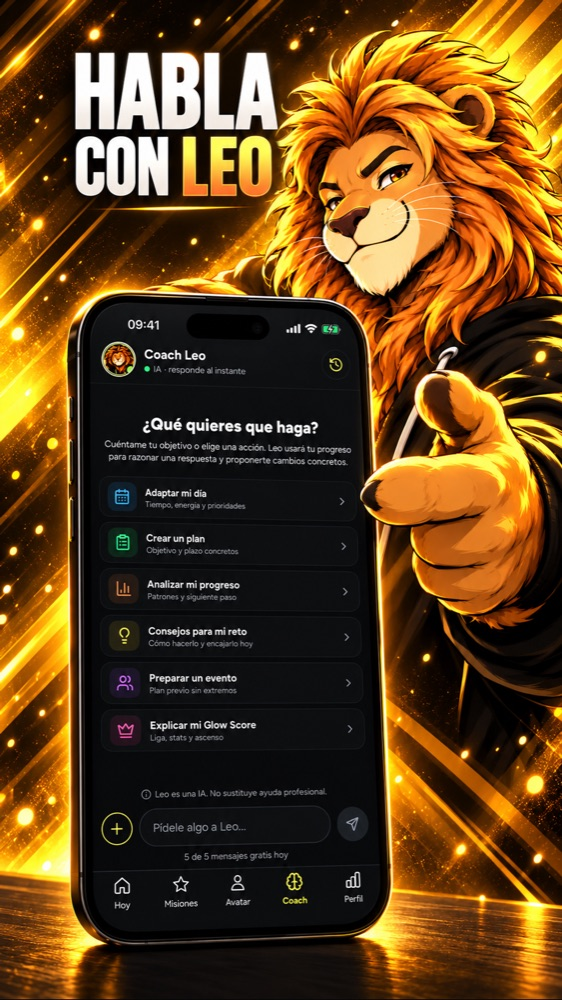

Looksmaxxing: Glow Up Coach
Coach IA de superación personal: autodisciplina y crecimiento personal diario
- Gratis
- Coach IA
- Reto diario
- Plan de 4 semanas
Así es por dentro

¿Qué es Looksmaxxing: Glow Up Coach?
Looksmaxxing: Glow Up Coach (también llamada Leo Glow) es una app gratis de looksmaxxing y glow up para hombres que convierte la superación personal en un juego: habit tracker, un coach con IA llamado Leo y una ruleta de retos diarios, basada en hábitos y no en puntuar tu cara.
Cada día giras una ruleta que te da un reto pequeño y concreto de un área (piel, físico, estilo, sueño, postura, mente, agua, grooming o social). Lo haces de verdad y tu avatar sube de nivel contigo. Leo, el coach con IA, te ayuda a encajarlo en tu día real.
Sin escanear tu cara, sin notas de atractivo, sin dietas extremas.
- Ruleta del reto diario: una misión al azar cada día que da XP
- Coach Leo, un coach con IA al que pedirle que ajuste tu día o te desatasque
- Planes de 4 semanas y retos paso a paso de 14 a 60 días
- Avatar, rachas, resumen semanal y Ligas Glow
- iPhone y Android, en 17 idiomas
¿Leo puntúa mi cara o mi físico?
No. Leo nunca escanea tu cara ni te pone una nota de atractivo. Trabaja lo que puedes cambiar con hábitos: cuidado de la piel, entrenamiento, sueño, postura, estilo y confianza.
¿Es gratis?
Sí. Se descarga gratis y los retos diarios son gratis. Glow+ es una suscripción opcional que abre los planes completos, el Coach Leo sin límite y quita los anuncios.
¿Es una forma sana de hacer looksmaxxing?
Esa es la idea: retos diarios pequeños que se pueden mantener, sin dietas extremas y sin obsesionarse con una nota.
¿Para quién es?
Para chicos que quieren un glow up a base de autodisciplina y rutina diaria. La puede usar cualquiera.
¿En qué móviles funciona?
iPhone (App Store) y Android (Google Play).
What is Looksmaxxing: Glow Up Coach?
Looksmaxxing: Glow Up Coach (also called Leo Glow) is a free looksmaxxing and glow up app for men that turns self improvement into a game: a habit tracker, an AI coach called Leo and a daily challenge wheel, built on daily habits instead of face ratings.
Every day you spin a wheel that gives you one small, concrete challenge in one area (skin, physique, style, sleep, posture, mind, water, grooming or social). You do it for real and your avatar levels up with you. Leo, the AI coach, helps you fit it into your actual day.
No face scans, no attractiveness scores, no extreme diets.
- Daily challenge wheel: one random mission a day that earns XP
- Coach Leo, an AI coach you can ask to adjust your day or get unstuck
- 4-week plans and step-by-step challenges from 14 to 60 days
- Avatar, streaks, a weekly recap and Glow Leagues
- iPhone and Android, in 17 languages
Does Leo rate my face or my looks?
No. Leo never scans your face and never gives you an attractiveness score. It works on what you can change with habits: skin care, training, sleep, posture, style and confidence.
Is Leo free?
Yes. It is free to download and the daily challenges are free. Glow+ is an optional subscription that unlocks the full plans, unlimited Coach Leo and removes ads.
Is it a healthy way to do looksmaxxing?
That is the idea: small daily challenges you can actually keep, with no extreme diets and no fixation on a score.
Who is it for?
Guys who want a glow up through self discipline and daily routines. Anyone can use it.
Which devices does it work on?
iPhone (App Store) and Android (Google Play).
ما هو Looksmaxxing: Glow Up Coach؟
Looksmaxxing: Glow Up Coach (ويُعرف أيضًا باسم Leo Glow) تطبيق مجاني للـ looksmaxxing والـ glow up للرجال يحوّل تطوير الذات إلى لعبة: متتبّع عادات ومدرب ذكاء اصطناعي اسمه Leo وعجلة تحديات يومية، مبني على العادات اليومية لا على تقييم الوجه.
كل يوم تُدير عجلة تمنحك تحديًا صغيرًا ومحددًا في مجال واحد (البشرة، اللياقة، الأسلوب، النوم، وضعية الجسم، العقل، شرب الماء، العناية الشخصية أو الجانب الاجتماعي). تنفّذه فعلًا ويرتقي مستوى شخصيتك الرمزية معك. Leo، المدرب بالذكاء الاصطناعي، يساعدك على ملاءمته ليومك الحقيقي.
بلا مسح للوجه، بلا درجات جاذبية، بلا حميات قاسية.
- عجلة التحدي اليومي: مهمة عشوائية واحدة كل يوم تمنحك نقاط XP
- Coach Leo، مدرب بالذكاء الاصطناعي يمكنك أن تطلب منه تعديل يومك أو مساعدتك حين تتعثر
- خطط من 4 أسابيع وتحديات خطوة بخطوة من 14 إلى 60 يومًا
- شخصية رمزية، سلاسل التزام، ملخص أسبوعي وGlow Leagues
- آيفون وأندرويد، بـ 17 لغة
هل يقيّم Leo وجهي أو مظهري؟
لا. لا يمسح Leo وجهك أبدًا ولا يعطيك درجة جاذبية. يعمل على ما يمكنك تغييره بالعادات: العناية بالبشرة، التمرين، النوم، وضعية الجسم، الأسلوب والثقة بالنفس.
هل Leo مجاني؟
نعم. التحميل مجاني والتحديات اليومية مجانية. Glow+ اشتراك اختياري يفتح الخطط الكاملة وCoach Leo بلا حدود ويزيل الإعلانات.
هل هذه طريقة صحية لممارسة looksmaxxing؟
هذه هي الفكرة: تحديات يومية صغيرة يمكنك الاستمرار عليها فعلًا، بلا حميات قاسية وبلا هوس بدرجة.
لمن هو؟
للشباب الذين يريدون glow up بالانضباط الذاتي والروتين اليومي. يمكن لأي شخص استخدامه.
على أي أجهزة يعمل؟
آيفون (App Store) وأندرويد (Google Play).
Was ist Looksmaxxing: Glow Up Coach?
Looksmaxxing: Glow Up Coach (auch Leo Glow genannt) ist eine kostenlose Looksmaxxing- und Glow-up-App für Männer, die Selbstverbesserung zum Spiel macht: Habit Tracker, ein KI-Coach namens Leo und ein Rad mit täglichen Challenges, aufgebaut auf Gewohnheiten statt auf Gesichtsbewertungen.
Jeden Tag drehst du ein Rad, das dir eine kleine, konkrete Challenge in einem Bereich gibt (Haut, Körper, Stil, Schlaf, Haltung, Kopf, Wasser, Pflege oder Soziales). Du ziehst sie wirklich durch, und dein Avatar steigt mit dir auf. Leo, der KI-Coach, hilft dir, sie in deinen echten Alltag einzubauen.
Keine Gesichtsscans, keine Attraktivitätsnoten, keine Extremdiäten.
- Rad der Tages-Challenge: jeden Tag eine zufällige Mission, die XP bringt
- Coach Leo, ein KI-Coach, den du bitten kannst, deinen Tag anzupassen oder dir aus einem Tief zu helfen
- 4-Wochen-Pläne und Schritt-für-Schritt-Challenges von 14 bis 60 Tagen
- Avatar, Streaks, ein Wochenrückblick und Glow Leagues
- iPhone und Android, in 17 Sprachen
Bewertet Leo mein Gesicht oder mein Aussehen?
Nein. Leo scannt nie dein Gesicht und gibt dir keine Attraktivitätsnote. Es arbeitet an dem, was du mit Gewohnheiten ändern kannst: Hautpflege, Training, Schlaf, Haltung, Stil und Selbstvertrauen.
Ist Leo kostenlos?
Ja. Der Download und die täglichen Challenges sind kostenlos. Glow+ ist ein optionales Abo, das die vollständigen Pläne und unbegrenzten Coach Leo freischaltet und die Werbung entfernt.
Ist das ein gesunder Weg, looksmaxxing zu betreiben?
Genau das ist die Idee: kleine tägliche Challenges, die du wirklich durchhalten kannst, ohne Extremdiäten und ohne Fixierung auf eine Note.
Für wen ist es?
Für Typen, die durch Selbstdisziplin und tägliche Routinen ein glow up wollen. Jeder kann es nutzen.
Auf welchen Geräten läuft es?
iPhone (App Store) und Android (Google Play).
C'est quoi Looksmaxxing: Glow Up Coach ?
Looksmaxxing: Glow Up Coach (aussi appelée Leo Glow) est une appli gratuite de looksmaxxing et de glow up pour les hommes qui transforme l'amélioration de soi en jeu : habit tracker, un coach IA nommé Leo et une roulette de défis quotidiens, fondée sur les habitudes plutôt que sur la notation du visage.
Chaque jour, tu fais tourner une roue qui te donne un petit défi concret dans un domaine (peau, physique, style, sommeil, posture, mental, eau, soins ou social). Tu le fais pour de vrai et ton avatar monte de niveau avec toi. Leo, le coach IA, t'aide à l'intégrer à ta vraie journée.
Pas de scan du visage, pas de note d'attractivité, pas de régimes extrêmes.
- Roue du défi quotidien : une mission au hasard par jour qui rapporte des XP
- Coach Leo, un coach IA à qui demander d'adapter ta journée ou de te débloquer
- Plans de 4 semaines et défis pas à pas de 14 à 60 jours
- Avatar, séries, bilan hebdomadaire et Glow Leagues
- iPhone et Android, en 17 langues
Leo note-t-il mon visage ou mon physique ?
Non. Leo ne scanne jamais ton visage et ne te donne aucune note d'attractivité. Il travaille ce que tu peux changer avec des habitudes : soins de la peau, entraînement, sommeil, posture, style et confiance.
Leo est-il gratuit ?
Oui. Le téléchargement et les défis quotidiens sont gratuits. Glow+ est un abonnement optionnel qui débloque les plans complets et Coach Leo en illimité, et supprime les pubs.
Est-ce une façon saine de faire du looksmaxxing ?
C'est l'idée : de petits défis quotidiens que tu peux vraiment tenir, sans régimes extrêmes et sans fixation sur une note.
Pour qui ?
Pour les mecs qui veulent un glow up grâce à la discipline personnelle et aux routines quotidiennes. N'importe qui peut l'utiliser.
Sur quels appareils ça marche ?
iPhone (App Store) et Android (Google Play).
Looksmaxxing: Glow Up Coach क्या है?
Looksmaxxing: Glow Up Coach (जिसे Leo Glow भी कहते हैं) लड़कों के लिए एक मुफ़्त looksmaxxing और glow up ऐप है जो self improvement को game बना देता है: habit tracker, Leo नाम का AI coach और रोज़ के challenges का wheel, चेहरे की रेटिंग पर नहीं, रोज़ की आदतों पर टिका।
हर दिन आप एक पहिया घुमाते हैं, जो किसी एक क्षेत्र (त्वचा, फ़िज़िक, स्टाइल, नींद, पॉश्चर, मन, पानी, ग्रूमिंग या सामाजिक) में एक छोटी, ठोस चुनौती देता है। आप उसे सच में करते हैं और आपका अवतार आपके साथ लेवल अप करता है। AI कोच Leo उसे आपके असली दिन में फ़िट करने में मदद करता है।
न चेहरे का स्कैन, न आकर्षण के स्कोर, न कोई एक्सट्रीम डाइट।
- रोज़ की चुनौती वाला पहिया: हर दिन एक रैंडम मिशन, जिससे XP मिलते हैं
- Coach Leo, एक AI कोच, जिससे आप अपना दिन ढलवा सकते हैं या अटकने पर मदद ले सकते हैं
- 4 हफ़्ते की योजनाएँ और 14 से 60 दिन की चरण-दर-चरण चुनौतियाँ
- अवतार, स्ट्रीक, साप्ताहिक रीकैप और Glow Leagues
- iPhone और Android पर, 17 भाषाओं में
क्या Leo मेरे चेहरे या लुक्स को रेट करता है?
नहीं। Leo कभी आपके चेहरे को स्कैन नहीं करता और आकर्षण का कोई स्कोर नहीं देता। यह उन चीज़ों पर काम करता है जिन्हें आदतों से बदला जा सकता है: स्किन केयर, ट्रेनिंग, नींद, पॉश्चर, स्टाइल और आत्मविश्वास।
क्या Leo मुफ़्त है?
हाँ। डाउनलोड मुफ़्त है और रोज़ की चुनौतियाँ भी मुफ़्त हैं। Glow+ एक वैकल्पिक सब्सक्रिप्शन है, जो पूरी योजनाएँ और असीमित Coach Leo खोलता है और विज्ञापन हटाता है।
क्या looksmaxxing करने का यह एक सेहतमंद तरीक़ा है?
यही तो विचार है: छोटी रोज़ की चुनौतियाँ जिन्हें आप सच में निभा सकें, बिना एक्सट्रीम डाइट और बिना किसी स्कोर की सनक के।
यह किसके लिए है?
उन लड़कों के लिए जो आत्म-अनुशासन और रोज़ की दिनचर्या से glow up चाहते हैं। कोई भी इसे इस्तेमाल कर सकता है।
यह किन डिवाइस पर चलता है?
iPhone (App Store) और Android (Google Play)।
Apa itu Looksmaxxing: Glow Up Coach?
Looksmaxxing: Glow Up Coach (juga disebut Leo Glow) adalah aplikasi looksmaxxing dan glow up gratis untuk pria yang mengubah pengembangan diri jadi game: habit tracker, coach AI bernama Leo, dan roda tantangan harian, dibangun di atas kebiasaan harian, bukan penilaian wajah.
Setiap hari kamu memutar roda yang memberimu satu tantangan kecil dan konkret di satu area (kulit, fisik, gaya, tidur, postur, pikiran, air, grooming, atau sosial). Kamu benar-benar menjalaninya dan avatarmu naik level bersamamu. Leo, pelatih AI, membantumu menyesuaikannya dengan harimu yang sebenarnya.
Tanpa pindai wajah, tanpa skor daya tarik, tanpa diet ekstrem.
- Roda tantangan harian: satu misi acak per hari yang memberi XP
- Coach Leo, pelatih AI yang bisa kamu minta menyesuaikan harimu atau membantumu saat buntu
- Rencana 4 minggu dan tantangan langkah demi langkah dari 14 sampai 60 hari
- Avatar, streak, rekap mingguan, dan Glow Leagues
- iPhone dan Android, dalam 17 bahasa
Apakah Leo menilai wajah atau penampilanku?
Tidak. Leo tidak pernah memindai wajahmu dan tidak memberimu skor daya tarik. Leo mengerjakan hal yang bisa kamu ubah lewat kebiasaan: perawatan kulit, latihan, tidur, postur, gaya, dan rasa percaya diri.
Apakah Leo gratis?
Ya. Unduhnya gratis dan tantangan hariannya gratis. Glow+ adalah langganan opsional yang membuka rencana lengkap, Coach Leo tanpa batas, dan menghapus iklan.
Apakah ini cara yang sehat untuk melakukan looksmaxxing?
Itulah idenya: tantangan harian kecil yang benar-benar bisa kamu pertahankan, tanpa diet ekstrem dan tanpa terobsesi pada skor.
Untuk siapa?
Untuk cowok yang ingin glow up lewat disiplin diri dan rutinitas harian. Siapa pun bisa memakainya.
Bisa dipakai di perangkat apa?
iPhone (App Store) dan Android (Google Play).
Cos'è Looksmaxxing: Glow Up Coach?
Looksmaxxing: Glow Up Coach (chiamata anche Leo Glow) è un'app gratuita di looksmaxxing e glow up per uomini che trasforma il self improvement in un gioco: habit tracker, un coach IA di nome Leo e una ruota di sfide giornaliere, basata sulle abitudini e non sui voti al viso.
Ogni giorno giri una ruota che ti dà una sfida piccola e concreta in un'area (pelle, fisico, stile, sonno, postura, mente, acqua, grooming o sociale). La fai davvero e il tuo avatar sale di livello con te. Leo, il coach IA, ti aiuta a inserirla nella tua giornata reale.
Niente scansioni del viso, niente punteggi di attrattività, niente diete estreme.
- Ruota della sfida giornaliera: una missione casuale al giorno che dà XP
- Coach Leo, un coach IA a cui puoi chiedere di adattare la tua giornata o di sbloccarti
- Piani di 4 settimane e sfide passo passo da 14 a 60 giorni
- Avatar, serie di giorni, riepilogo settimanale e Glow Leagues
- iPhone e Android, in 17 lingue
Leo giudica il mio viso o il mio aspetto?
No. Leo non scansiona mai il tuo viso e non ti dà un punteggio di attrattività. Lavora su ciò che puoi cambiare con le abitudini: cura della pelle, allenamento, sonno, postura, stile e sicurezza in te stesso.
Leo è gratis?
Sì. Scaricarla è gratis e le sfide giornaliere sono gratis. Glow+ è un abbonamento facoltativo che sblocca i piani completi e Coach Leo illimitato e toglie la pubblicità.
È un modo sano di fare looksmaxxing?
È l'idea: piccole sfide giornaliere che puoi davvero mantenere, senza diete estreme e senza fissarsi su un punteggio.
Per chi è?
Per ragazzi che vogliono un glow up con autodisciplina e routine quotidiane. Chiunque può usarla.
Su quali dispositivi funziona?
iPhone (App Store) e Android (Google Play).
Looksmaxxing: Glow Up Coachとは？
Looksmaxxing: Glow Up Coach（Leo Glowとも呼ばれます）は、自分磨きをゲームにする男性向けの無料looksmaxxing・glow upアプリです。ハビットトラッカー、AIコーチのLeo、毎日のチャレンジルーレットがひとつになり、顔の採点ではなく毎日の習慣を土台にしています。
毎日ルーレットを回すと、1つの分野（肌、体づくり、スタイル、睡眠、姿勢、メンタル、水分、身だしなみ、人付き合い）で小さくて具体的なチャレンジが出ます。本当にやってみると、アバターも一緒にレベルアップ。AIコーチのLeoが、それを実際の1日に組み込む手助けをします。
顔スキャンなし、魅力スコアなし、極端な食事制限なし。
- デイリーチャレンジのルーレット：毎日ランダムなミッションが1つ出て、XPがもらえる
- Coach Leo：1日の調整や行き詰まったときの相談ができるAIコーチ
- 4週間プランと、14日から60日までのステップ式チャレンジ
- アバター、連続記録、週間まとめ、Glow Leagues
- iPhoneとAndroid対応、17言語
Leoは顔や見た目を採点しますか？
いいえ。Leoは顔をスキャンせず、魅力スコアも出しません。習慣で変えられること、つまりスキンケア、トレーニング、睡眠、姿勢、スタイル、自信に取り組みます。
Leoは無料ですか？
はい。ダウンロードもデイリーチャレンジも無料です。Glow+は任意のサブスクリプションで、フルプランとCoach Leoの無制限利用が解放され、広告も消えます。
looksmaxxingとして健全なやり方ですか？
それが狙いです。続けられる小さな毎日のチャレンジで、極端な食事制限も、スコアへの執着もありません。
どんな人向けですか？
自己管理と毎日のルーティンでglow upしたい男性向けです。誰でも使えます。
どの端末で使えますか？
iPhone（App Store）とAndroid（Google Play）です。
Looksmaxxing: Glow Up Coach는 무엇인가요?
Looksmaxxing: Glow Up Coach(Leo Glow라고도 해요)는 자기계발을 게임으로 바꿔 주는 남성용 무료 looksmaxxing·glow up 앱입니다. 습관 기록, AI 코치 Leo, 매일 챌린지 룰렛이 한곳에 있고, 얼굴 평가가 아니라 매일의 습관을 바탕으로 해요.
매일 룰렛을 돌리면 한 가지 영역(피부, 피지컬, 스타일, 수면, 자세, 멘탈, 수분, 그루밍, 소셜)에서 작고 구체적인 챌린지가 하나 나옵니다. 실제로 해내면 아바타도 함께 레벨업합니다. AI 코치 Leo가 그 챌린지를 실제 하루에 맞추도록 도와줍니다.
얼굴 스캔 없음, 매력 점수 없음, 극단적인 식단 없음.
- 데일리 챌린지 룰렛: 매일 무작위 미션 하나, 완료하면 XP 획득
- Coach Leo: 하루 일정 조정이나 막힐 때 물어볼 수 있는 AI 코치
- 4주 플랜과 14일에서 60일까지의 단계별 챌린지
- 아바타, 연속 기록, 주간 리캡, Glow Leagues
- iPhone과 Android, 17개 언어 지원
Leo가 제 얼굴이나 외모를 평가하나요?
아니요. Leo는 얼굴을 스캔하지 않고 매력 점수도 매기지 않습니다. 스킨케어, 운동, 수면, 자세, 스타일, 자신감처럼 습관으로 바꿀 수 있는 것을 다룹니다.
Leo는 무료인가요?
네. 다운로드도 데일리 챌린지도 무료입니다. Glow+는 선택형 구독으로, 전체 플랜과 무제한 Coach Leo를 열어 주고 광고를 없애 줍니다.
건강하게 looksmaxxing 하는 방법인가요?
그게 핵심입니다. 실제로 이어갈 수 있는 작은 일일 챌린지이고, 극단적인 식단도 점수에 대한 집착도 없습니다.
누구를 위한 앱인가요?
자기관리와 매일의 루틴으로 glow up 하고 싶은 남성을 위한 앱입니다. 누구나 사용할 수 있습니다.
어떤 기기에서 쓸 수 있나요?
iPhone(App Store)과 Android(Google Play)입니다.
Czym jest Looksmaxxing: Glow Up Coach?
Looksmaxxing: Glow Up Coach (nazywana też Leo Glow) to darmowa aplikacja looksmaxxing i glow up dla mężczyzn, która zamienia rozwój osobisty w grę: tracker nawyków, coach AI o imieniu Leo i ruletka codziennych wyzwań, oparta na nawykach, a nie na ocenianiu twarzy.
Każdego dnia kręcisz kołem, które daje ci jedno małe, konkretne wyzwanie w jednym obszarze (skóra, sylwetka, styl, sen, postawa, głowa, woda, pielęgnacja lub towarzystwo). Robisz je naprawdę, a twój awatar awansuje razem z tobą. Leo, trener AI, pomaga wpasować je w twój prawdziwy dzień.
Bez skanowania twarzy, bez ocen atrakcyjności, bez skrajnych diet.
- Koło codziennego wyzwania: jedna losowa misja dziennie, która daje XP
- Coach Leo, trener AI, którego możesz poprosić o dopasowanie dnia albo pomoc, gdy utkniesz
- Plany na 4 tygodnie i wyzwania krok po kroku od 14 do 60 dni
- Awatar, serie, tygodniowe podsumowanie i Glow Leagues
- iPhone i Android, w 17 językach
Czy Leo ocenia moją twarz lub wygląd?
Nie. Leo nigdy nie skanuje twojej twarzy i nie daje ci oceny atrakcyjności. Pracuje nad tym, co możesz zmienić nawykami: pielęgnacja skóry, trening, sen, postawa, styl i pewność siebie.
Czy Leo jest darmowe?
Tak. Pobranie jest darmowe, a codzienne wyzwania też. Glow+ to opcjonalna subskrypcja, która odblokowuje pełne plany i nieograniczonego Coach Leo oraz usuwa reklamy.
Czy to zdrowy sposób na looksmaxxing?
O to właśnie chodzi: małe codzienne wyzwania, które da się utrzymać, bez skrajnych diet i bez obsesji na punkcie oceny.
Dla kogo to jest?
Dla facetów, którzy chcą glow up dzięki samodyscyplinie i codziennym rutynom. Może z niej korzystać każdy.
Na jakich urządzeniach działa?
iPhone (App Store) i Android (Google Play).
O que é o Looksmaxxing: Glow Up Coach?
O Looksmaxxing: Glow Up Coach (também chamado Leo Glow) é um app gratuito de looksmaxxing e glow up para homens que transforma o autodesenvolvimento em jogo: habit tracker, um coach de IA chamado Leo e uma roleta de desafios diários, baseado em hábitos, e não em dar nota para o seu rosto.
Todo dia você gira uma roleta que te dá um desafio pequeno e concreto em uma área (pele, físico, estilo, sono, postura, mente, água, grooming ou social). Você faz de verdade e seu avatar sobe de nível com você. O Leo, o coach de IA, te ajuda a encaixar isso no seu dia a dia real.
Sem escanear o rosto, sem nota de atratividade, sem dietas extremas.
- Roleta do desafio diário: uma missão aleatória por dia que dá XP
- Coach Leo, um coach de IA a quem você pode pedir para ajustar seu dia ou te destravar
- Planos de 4 semanas e desafios passo a passo de 14 a 60 dias
- Avatar, sequências, resumo semanal e Glow Leagues
- iPhone e Android, em 17 idiomas
O Leo avalia meu rosto ou minha aparência?
Não. O Leo nunca escaneia seu rosto e não dá nota de atratividade. Ele trabalha o que você pode mudar com hábitos: cuidados com a pele, treino, sono, postura, estilo e confiança.
O Leo é gratuito?
Sim. Baixar é de graça e os desafios diários também. O Glow+ é uma assinatura opcional que libera os planos completos e o Coach Leo ilimitado, e tira os anúncios.
É um jeito saudável de fazer looksmaxxing?
Essa é a ideia: pequenos desafios diários que você consegue manter, sem dietas extremas e sem ficar obcecado por uma nota.
Para quem é?
Para caras que querem um glow up com autodisciplina e rotina diária. Qualquer pessoa pode usar.
Em quais aparelhos funciona?
iPhone (App Store) e Android (Google Play).
Что такое Looksmaxxing: Glow Up Coach?
Looksmaxxing: Glow Up Coach (оно же Leo Glow) — бесплатное приложение для looksmaxxing и glow up для мужчин, которое превращает самосовершенствование в игру: трекер привычек, ИИ-коуч Leo и рулетка ежедневных челленджей, построенное на привычках, а не на оценке лица.
Каждый день вы крутите колесо, которое выдаёт одно небольшое конкретное задание в одной из областей (кожа, физическая форма, стиль, сон, осанка, голова, вода, уход за собой или общение). Вы выполняете его по-настоящему, и ваш аватар растёт вместе с вами. Leo, ИИ-коуч, помогает вписать задание в ваш реальный день.
Без сканирования лица, без оценок привлекательности, без экстремальных диет.
- Колесо задания дня: одна случайная миссия в день, за которую начисляется XP
- Coach Leo — ИИ-коуч, которого можно попросить скорректировать день или помочь, если застряли
- Планы на 4 недели и пошаговые испытания от 14 до 60 дней
- Аватар, серии, недельный итог и Glow Leagues
- iPhone и Android, на 17 языках
Оценивает ли Leo моё лицо или внешность?
Нет. Leo никогда не сканирует лицо и не ставит оценку привлекательности. Он работает с тем, что можно изменить привычками: уход за кожей, тренировки, сон, осанка, стиль и уверенность.
Leo бесплатный?
Да. Скачать его можно бесплатно, ежедневные задания тоже бесплатны. Glow+ — необязательная подписка, которая открывает полные планы и безлимитного Coach Leo и убирает рекламу.
Это здоровый способ заниматься looksmaxxing?
В этом и идея: небольшие ежедневные задания, которые реально выдерживать, без экстремальных диет и без зацикленности на оценке.
Для кого это?
Для парней, которые хотят glow up через самодисциплину и ежедневные рутины. Пользоваться может любой.
На каких устройствах работает?
iPhone (App Store) и Android (Google Play).
Looksmaxxing: Glow Up Coach คืออะไร?
Looksmaxxing: Glow Up Coach (หรือ Leo Glow) คือแอป looksmaxxing และ glow up ฟรีสำหรับผู้ชาย ที่เปลี่ยนการพัฒนาตัวเองให้เป็นเกม: habit tracker, โค้ช AI ชื่อ Leo และวงล้อชาเลนจ์ประจำวัน ใช้นิสัยประจำวันเป็นหลัก ไม่ใช่การให้คะแนนใบหน้า
ทุกวันคุณหมุนวงล้อที่ให้ภารกิจเล็ก ๆ ที่ทำได้จริงหนึ่งอย่างในหนึ่งด้าน (ผิว รูปร่าง สไตล์ การนอน ท่าทาง จิตใจ การดื่มน้ำ การดูแลตัวเอง หรือสังคม) คุณทำจริง แล้วอวาตาร์ของคุณก็เลเวลอัปไปพร้อมกัน Leo โค้ช AI จะช่วยให้ภารกิจพอดีกับวันจริงของคุณ
ไม่สแกนใบหน้า ไม่มีคะแนนความหล่อ ไม่มีไดเอตสุดโต่ง
- วงล้อภารกิจรายวัน: สุ่มภารกิจหนึ่งอย่างต่อวัน ทำแล้วได้ XP
- Coach Leo โค้ช AI ที่คุณขอให้ปรับวันของคุณหรือช่วยตอนติดขัดได้
- แผน 4 สัปดาห์ และภารกิจทีละขั้นตั้งแต่ 14 ถึง 60 วัน
- อวาตาร์ สถิติต่อเนื่อง สรุปรายสัปดาห์ และ Glow Leagues
- iPhone และ Android รองรับ 17 ภาษา
Leo ให้คะแนนใบหน้าหรือหน้าตาของฉันไหม?
ไม่ Leo ไม่เคยสแกนใบหน้าและไม่ให้คะแนนความหล่อ แต่จะโฟกัสสิ่งที่คุณเปลี่ยนได้ด้วยนิสัย ได้แก่ การดูแลผิว การออกกำลังกาย การนอน ท่าทาง สไตล์ และความมั่นใจ
Leo ฟรีไหม?
ฟรี ดาวน์โหลดฟรีและภารกิจรายวันก็ฟรี Glow+ เป็นการสมัครสมาชิกแบบไม่บังคับ ที่ปลดล็อกแผนเต็ม Coach Leo แบบไม่จำกัด และเอาโฆษณาออก
นี่เป็นวิธีทำ looksmaxxing ที่ดีต่อสุขภาพไหม?
นั่นคือแนวคิดของเรา: ภารกิจเล็ก ๆ รายวันที่ทำต่อเนื่องได้จริง ไม่มีไดเอตสุดโต่ง และไม่ยึดติดกับคะแนน
เหมาะกับใคร?
เหมาะกับผู้ชายที่อยากให้ตัวเอง glow up ด้วยวินัยและกิจวัตรประจำวัน ใครก็ใช้ได้
ใช้ได้บนอุปกรณ์อะไรบ้าง?
iPhone (App Store) และ Android (Google Play)
Looksmaxxing: Glow Up Coach nedir?
Looksmaxxing: Glow Up Coach (Leo Glow olarak da bilinir), kişisel gelişimi oyuna çeviren, erkekler için ücretsiz bir looksmaxxing ve glow up uygulamasıdır: habit tracker, Leo adında bir yapay zeka koçu ve günlük görev çarkı; yüz puanlamak yerine günlük alışkanlıklara dayanır.
Her gün bir çark çevirirsin; çark sana tek bir alanda (cilt, fizik, stil, uyku, duruş, zihin, su, bakım veya sosyal hayat) küçük ve somut bir görev verir. Görevi gerçekten yaparsın ve avatarın seninle birlikte seviye atlar. Yapay zekâ koçu Leo, görevi gerçek gününe sığdırmana yardım eder.
Yüz taraması yok, çekicilik puanı yok, aşırı diyet yok.
- Günlük görev çarkı: her gün XP kazandıran rastgele bir görev
- Coach Leo, gününü ayarlamasını ya da takıldığında yardım etmesini isteyebileceğin bir yapay zekâ koçu
- 4 haftalık planlar ve 14 ile 60 gün arasında adım adım görevler
- Avatar, seriler, haftalık özet ve Glow Leagues
- iPhone ve Android, 17 dilde
Leo yüzümü ya da görünüşümü puanlıyor mu?
Hayır. Leo yüzünü asla taramaz ve sana çekicilik puanı vermez. Alışkanlıklarla değiştirebileceğin şeyler üzerinde çalışır: cilt bakımı, antrenman, uyku, duruş, stil ve özgüven.
Leo ücretsiz mi?
Evet. İndirmek ücretsiz, günlük görevler de ücretsiz. Glow+ isteğe bağlı bir abonelik; tam planların ve sınırsız Coach Leo'nun kilidini açar, reklamları kaldırır.
Bu looksmaxxing yapmanın sağlıklı bir yolu mu?
Fikir tam bu: gerçekten sürdürebileceğin küçük günlük görevler, aşırı diyet ve puan takıntısı olmadan.
Kimler için?
Öz disiplin ve günlük rutinlerle glow up yapmak isteyen erkekler için. Herkes kullanabilir.
Hangi cihazlarda çalışır?
iPhone (App Store) ve Android (Google Play).
Looksmaxxing: Glow Up Coach là gì?
Looksmaxxing: Glow Up Coach (còn gọi là Leo Glow) là ứng dụng looksmaxxing và glow up miễn phí cho nam giới, biến việc phát triển bản thân thành trò chơi: theo dõi thói quen, huấn luyện viên AI tên Leo và vòng quay thử thách mỗi ngày, xây dựng trên thói quen chứ không phải chấm điểm khuôn mặt.
Mỗi ngày bạn quay một vòng quay để nhận một thử thách nhỏ, cụ thể ở một lĩnh vực (da, thể hình, phong cách, giấc ngủ, tư thế, tinh thần, uống nước, chăm chút ngoại hình hoặc giao tiếp). Bạn làm thật và nhân vật của bạn lên cấp cùng bạn. Leo, huấn luyện viên AI, giúp bạn xếp thử thách vào ngày thực tế của mình.
Không quét khuôn mặt, không chấm điểm độ cuốn hút, không ăn kiêng cực đoan.
- Vòng quay thử thách hằng ngày: mỗi ngày một nhiệm vụ ngẫu nhiên, hoàn thành nhận XP
- Coach Leo, huấn luyện viên AI mà bạn có thể nhờ điều chỉnh ngày của mình hoặc gỡ rối khi bị bí
- Kế hoạch 4 tuần và thử thách từng bước từ 14 đến 60 ngày
- Nhân vật, chuỗi ngày liên tiếp, tổng kết hằng tuần và Glow Leagues
- iPhone và Android, hỗ trợ 17 ngôn ngữ
Leo có chấm điểm khuôn mặt hay ngoại hình của tôi không?
Không. Leo không bao giờ quét khuôn mặt và không chấm điểm độ cuốn hút. Leo tập trung vào những gì bạn thay đổi được bằng thói quen: chăm sóc da, tập luyện, giấc ngủ, tư thế, phong cách và sự tự tin.
Leo có miễn phí không?
Có. Tải về miễn phí và các thử thách hằng ngày cũng miễn phí. Glow+ là gói đăng ký tùy chọn, mở khóa các kế hoạch đầy đủ, Coach Leo không giới hạn và bỏ quảng cáo.
Đây có phải cách làm looksmaxxing lành mạnh không?
Đó chính là ý tưởng: những thử thách nhỏ mỗi ngày mà bạn thật sự duy trì được, không ăn kiêng cực đoan và không ám ảnh về điểm số.
Ứng dụng dành cho ai?
Dành cho các chàng trai muốn glow up bằng kỷ luật bản thân và thói quen hằng ngày. Ai cũng dùng được.
Chạy trên thiết bị nào?
iPhone (App Store) và Android (Google Play).
Looksmaxxing: Glow Up Coach 是什么？
Looksmaxxing: Glow Up Coach（也叫 Leo Glow）是一款面向男性的免费 looksmaxxing 和 glow up 应用，把自我提升变成游戏：习惯打卡、名叫 Leo 的 AI 教练和每日挑战轮盘，靠的是每天的习惯，而不是给你的脸打分。
每天转一次转盘，就会在某个领域（皮肤、体格、穿搭、睡眠、体态、心态、喝水、仪容护理或社交）得到一个小而具体的挑战。你真去做，你的虚拟形象也跟着你升级。AI 教练 Leo 帮你把挑战安排进真实的一天。
不扫描面部，不打颜值分，不搞极端节食。
- 每日挑战转盘：每天一个随机任务，完成可获得 XP
- Coach Leo，一位 AI 教练，你可以让它调整你的一天，或在卡住时帮你一把
- 4周计划，以及14到60天的循序渐进挑战
- 虚拟形象、连续打卡、每周回顾和 Glow Leagues
- 支持 iPhone 和 Android，提供 17 种语言
Leo 会给我的脸或外貌打分吗？
不会。Leo 从不扫描你的脸，也不会给你颜值分。它专注于你能靠习惯改变的事：护肤、训练、睡眠、体态、穿搭和自信。
Leo 免费吗？
免费。下载免费，每日挑战也免费。Glow+ 是可选订阅，可解锁完整计划和不限次数的 Coach Leo，并去除广告。
这是健康的 looksmaxxing 方式吗？
这正是初衷：每天一个能真正坚持的小挑战，没有极端节食，也不沉迷于分数。
适合谁用？
适合想通过自律和日常习惯实现 glow up 的男生。任何人都可以用。
支持哪些设备？
iPhone（App Store）和 Android（Google Play）。